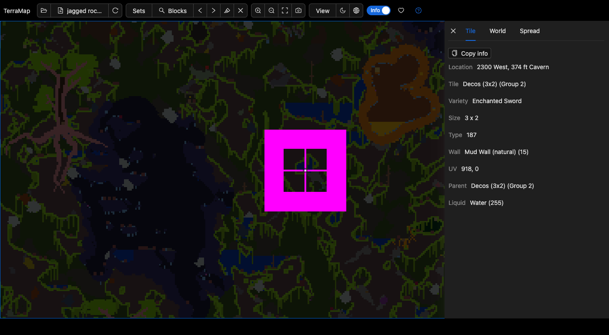

TerraMap
TerraMap泰拉瑞亚：如何找到附魔剑冢
附魔剑是游戏早期最好用的剑之一，而获得它的唯一去处就是附魔剑冢。剑冢非常稀有，又藏得很深， 不过用 TerraMap 几次点击就能找出你世界里的每一座。
你要找的是什么
附魔剑冢是一个小型地下洞穴，中间插着一把石中剑。挖掉它就会掉落附魔剑；在 Terraria v1.4.0.1 及更高版本创建的世界里，还有 1/50 的几率掉落泰拉魔刃。
- 并不是每个世界都有，有些世界还不止一座。
- 从地表正下方到洞穴层深处，都可能出现。
- 有些剑冢有一条一格宽的竖井通下去，但大多数是封死的，很容易路过而没发现。
用 TerraMap 找到它
- 打开 TerraMap，用打开世界文件打开你的世界，或者把
.wld文件拖到页面上。不知道文件在哪？见世界文件保存在哪里。 - 选择套装 → 附魔物品。这会搜索插在石头里的剑，以及装着附魔剑或附魔回旋镖的宝箱。
- 按 H（高亮所有匹配方块）。地图上其他内容会变暗，匹配项就更醒目了。
- 按 N（查找下一个方块）依次跳到每个匹配项，按 P 回到上一个。TerraMap 会把地图居中到它，并打上粉色标记。用滚轮或 E 放大细看。
- 按 I 打开信息面板。剑冢里的剑会显示为变体：附魔剑，并给出位置，例如 “西2300英尺, 374英尺 洞穴”。

提示：TerraMap 显示位置的方式和游戏里的罗盘、深度计（或 GPS）一致，所以你可以直接往下挖到剑冢。
没有匹配？说明你的世界没有剑冢。如果你打开的是文件夹并选了角色，TerraMap 只搜索这个角色探索过的区域，想搜全图请单独打开世界文件。
其他值得找的东西
套装菜单里还有更多一键搜索：生命水晶与生命果、上锁的宝箱、蜘蛛洞、生成物品的雕像，以及腐化、猩红和神圣方块。 你也可以用方块（B）搜索任意方块、墙壁或物品，包括宝箱里的物品。